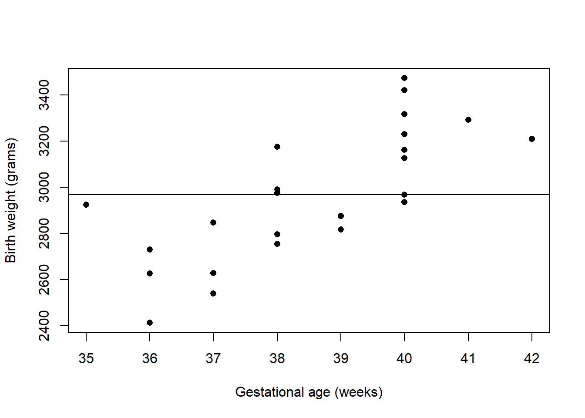
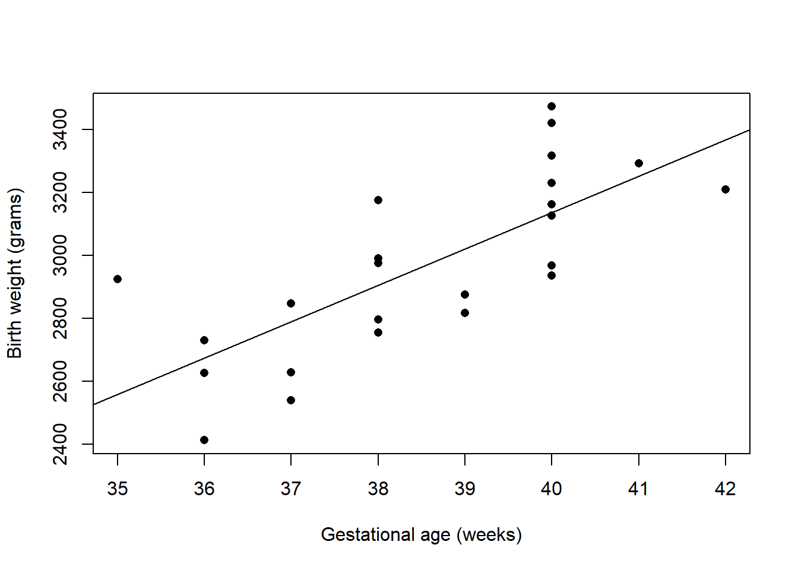
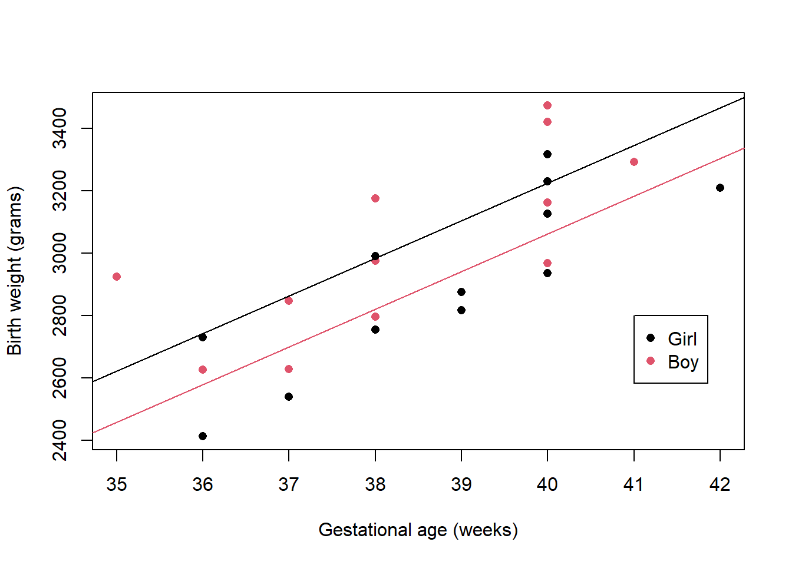
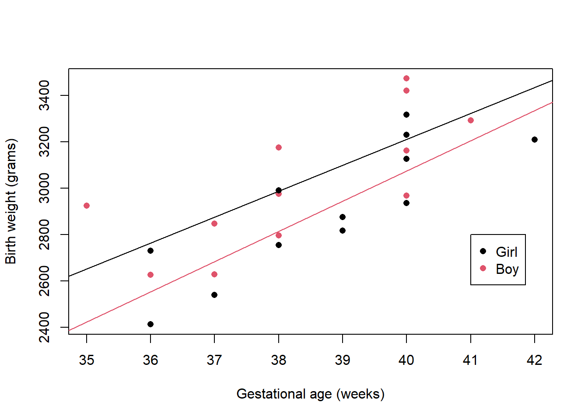
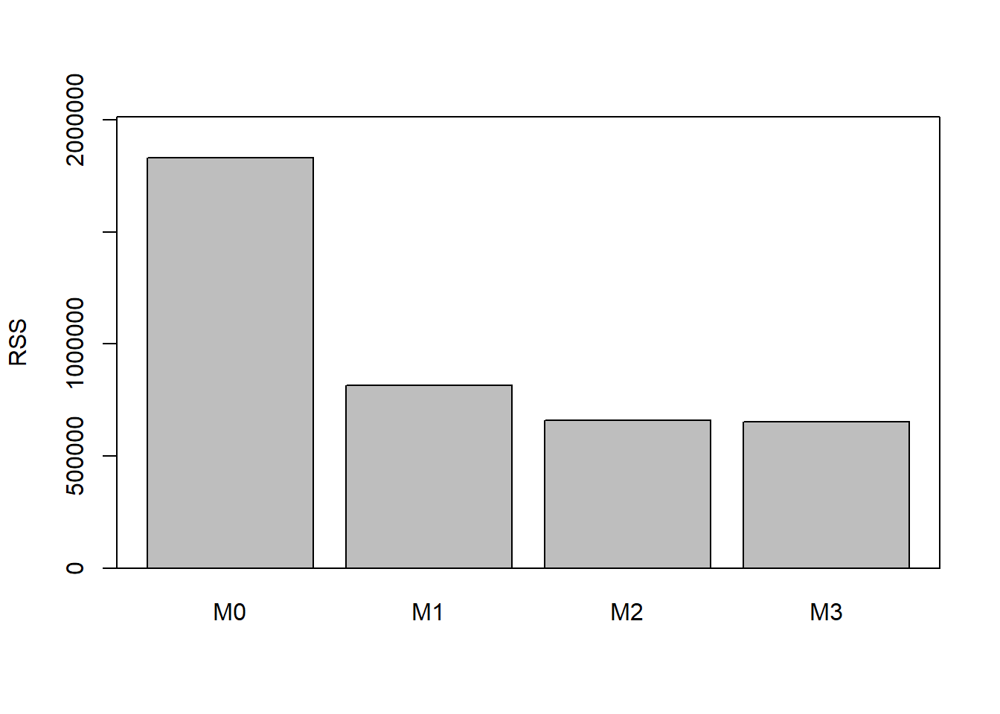
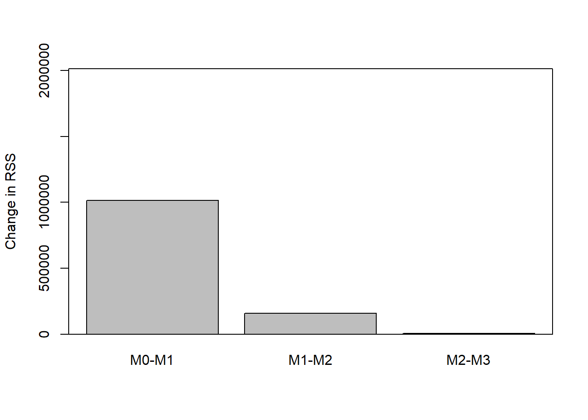

9 Appendix: Background to analysis of variance
\[ \def\b#1{\mathbf{#1}} \def\half{\frac12} \def\E{\mbox{E}} \def\V{\mbox{Var}} \]
9.1 Analysis of variance
Consider the four models fitted to the birth weight data. Figure 9.1 shows the data set along with the corresponding fitted model as a single line, for the models which do not take \(\texttt{Sex}\) into account, and two lines, for the models which include \(\texttt{Sex}\).




The residual sum of squares (RSS) takes into account the vertical distance between the fitted model and the data values. Let \(R_k\) denote the residual sum of squares for Model \(k:\) \(R_k = \sum_{i=1}^n (y_i - \hat{\mu}_{ki})^2,\) where \(\hat{\mu}_{ki}\) is the fitted value for individual \(i\) under \(\texttt{Model}\) \(k\) and let \(r_k\) denote the corresponding residual degrees of freedom for \(\texttt{Model}\) \(k\) (the number of observations minus the number of model parameters). The table below shows these values for the four models fitted to the data.
| \(\texttt{Model}~k\) | \(R_k\) | \(r_k\) | \(R_k-R_{k-1}\) | \(r_k-r_{k-1}\) |
|---|---|---|---|---|
| \(\texttt{0}\) | 1829873 | 23 | ||
| \(\texttt{1}\) | 816074 | 22 | 1013799 | 1 |
| \(\texttt{2}\) | 658771 | 21 | 157304 | 1 |
| \(\texttt{3}\) | 652425 | 20 | 6346 | 1 |
The table also shows the change in residual sums of squares, \(R_k-R_{k-1}\), which measures the improvement in the fit due to the extra parameters used in Model \(k\) compared to Model \(k-1\). The RSS and changes in RSS values are also shown in Figure 9.2. It is clear that there is a substantial reduction in RSS moving from Model \(0\) to Model \(1\), but small reductions as further parameters are added to the model. We might guess that Model \(1\) will be the ``best’’ model, but a it is not acceptable to base a choice on our personal subjective opinion but instead a sequence of hypothesis tests will be used.


Here, a sequence of three hypothesis tests is considered: Starting with \[\mbox{Test 1} \quad H_0: \texttt{Model } 0 \text{ is true}; H_1: \texttt{Model } 1 \text{ is true}.\] Which can be judged by comparing \(R_1-R_0=\) 1013799 which follows a \(\sigma^2\chi^2\) distribution on \(r_1-r_0=1\) degrees of freedom (\((R_1-R_0)/\sigma^2\) follows a \(\chi^2_1\)distribution) with \(R_1=\) 816074 which follows a \(\sigma^2\chi^2\) distribution on \(r_1=22\) degrees of freedom (\(R_1/\sigma^2\) follows a \(\chi^2_{22}\) distribution. Fortunately, taking the ratio eliminates \(\sigma^2\) giving the test statistics \[ F_{01} = \frac{(R_1-R_0)/(r_1-r_0)}{R_1/r_1}=\frac{1013799/1}{816074/22}=27.33 \] If \(H_0\) is true, then we would expect this to be close to 1. The 5%, 1% and 0.1% critical values for the distribution are 4.3, 7.95, 14.38, and the observed F statistics is much larger than all these and hence \(\mbox{p-value}<0.001\) meaning we reject \(H_0\) in favour of \(H_1\).
If \(H_0\) had been accepted then the sequence would stops and \(\texttt{Model}~0\) declared the best, whereas \(H_0\) is rejected and the next test is considered \[\mbox{Test 2} \quad H_0: \texttt{Model } 1 \text{ is true}; H_1: \texttt{Model } 2 \text{ is true}.\] If \(H_0\) is accepted here then the sequence stops and \(\texttt{Model}~1\) is declared the best, whereas is \(H_0\) is rejected then the last test is considered \[\mbox{Test 3} \quad H_1: \texttt{Model } 2 \text{ is true}; H_1: \texttt{Model } 3 \text{ is true}.\] If \(H_0\) is accepted here then the sequence stops and \(\texttt{Model}~2\) is declared the best, whereas if \(H_0\) is rejected then \(\texttt{Model } 3\) is declared the best.
9.2 Distributions derived from the Gaussian distribution
9.2.1 The Gaussian (normal) distribution
If \(X\sim N(\mu, \sigma^2)\) then \[ f(x) = \frac{1}{ \sqrt {2\pi \sigma^2} } \exp \left\{ - \frac12 \frac{(x-\mu)^2}{\sigma^2} \right\} , \hspace{10mm} -\infty <x <\infty . \] Properties:
- The parameter \(\mu=\mbox{E}[X]\) is a location parameter and \(\sigma^2=\mbox{Var}[X]\) is a scale parameter.
- If \(X \sim N(\mu, \sigma^2)\) then \(aX+b \sim N(a\mu+b, a^2\sigma^2).\)
- If \(X_i \sim N(\mu_i, \sigma_i^2), i=1,...,n\) (independent) then \(\sum a_i X_i \sim N(\sum a_i\mu, \sum a_i^2\sigma^2).\)
- A special case is when \(\mu=0\) and \(\sigma^2=1\) which is called the standard normal distribution.
9.2.2 The \(\chi^2\)-distribution
If \(X\) has a Chi-squared distribution, \(X\sim \chi_\nu ^2\) then \[ f(x) = \frac{ (\frac12) ^{\frac{\nu}{2}} x^{\frac{\nu}{2}-1} e^{-\frac12 x}}{\Gamma \left(\frac{\nu}{2}\right)}, \hspace{10mm} x\ge 0, \nu >0 \mbox{ and integer}. \] with \(\mbox{E}[X] = \nu\) and \(\mbox{Var}[X] = 2 \nu\).
Properties:
- The parameter \(\nu\) is a shape parameter and is called the degrees of freedom. The pdf is positive skew, but becomes more symmetric as \(\nu\) increases.
- If \(Z \sim N(0,1)\) then \(Z^2 \sim \chi_1^2\).
- If \(X_i \sim \chi_{\nu_i} ^2, i=1,...,n\) (independent) then \(\sum X_i \sim \chi_\nu ^2\), where \(\nu = \sum \nu_i\).
- If \(Z_i \sim N(0,1), i=1,...,n\) (independent) then \(\sum Z_i^2 \sim \chi_n ^2\).
- This is a special case of the gamma distribution, with \(\alpha = \nu/2\) and \(\lambda = \frac12\), that is \(\gamma ({\frac{\nu}{2}}, \frac12)\).
9.2.3 The t- and F-distributions
If \(X\) has a t-distribution, \(X\sim t_{\nu}\) then \[ f(x) = \frac{1}{\sqrt {\pi \nu}} \frac{\Gamma ((\nu+1)/2)}{\Gamma(\nu/2)} \left(1+ \frac{x^2}{\nu}\right)^{-\frac12 (\nu+1)} \hspace{5mm} -\infty<x<\infty, \] where \(\nu >0\) and integer.
Properties:
- The parameter \(\nu\) is called the degrees of freedom.
- If \(X \sim N(0,1)\) and \(Y \sim \chi_\nu ^2\) (independent) then \[ \frac{X}{\sqrt {Y/\nu}} \sim t_\nu . \]
- If \(X \sim t_{\nu}\) then \(X^2 \sim F_{1,\nu}\).
- \(t_{\nu} \rightarrow N(0,1)\) as \(\nu \rightarrow \infty\).
If \(X\) has an F-distribution, \(X\sim F_{\nu_1, \nu_2}\) then \[ f (x) = \frac{\nu_1 ^{\frac{\nu_1}{2}} \nu_2 ^{\frac{\nu_2}{2}} x ^{\frac{\nu_1}{2}-1} } {B(\frac{\nu_1}{2}, \frac{\nu_2}{2}) (\nu_2+\nu_1 x)^{\frac{\nu_2+\nu_1}{2}} } \hspace{10mm} x\ge 0. \] where \(\nu_1, \nu_2 > 0\) and integer are know as the degrees of freedom.
Properties:
- The parameters \(\nu_1\) and \(\nu_2\) are called the degrees of freedom.
- If \(X_1 \sim \chi_{\nu_2} ^2\) and \(X_2 \sim \chi_{\nu_2} ^2\) (independent) then \[ \frac{X_1/\nu_1}{X_2/\nu_2} \sim F_{\nu_1, \nu_2}. \]
- If \(X \sim F_{\nu_1, \nu_2}\) then \(1/X \sim F_{\nu_2, \nu_1}\), hence, \(Pr(F_{\nu_1, \nu_2} < c) = Pr(F_{\nu_2, \nu_1} > 1/c).\)